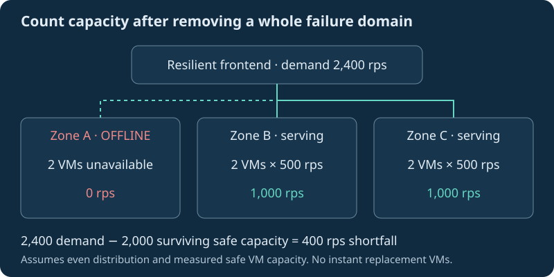

When and how to load balance
Use a load balancer when clients need a stable service entry point while instances scale, fail or drain. It distributes work; it does not create backend capacity or replicate application state.
By the end you can...
Choose L4 or L7 and specify the health, distribution and lifecycle contract.Pick the behavior, not the product logo
| Dimension | Choice and consequence |
|---|---|
| L4 transport | Distribute TCP connections or UDP flows. Suitable for non-HTTP protocols and TLS pass-through; no encrypted HTTP path inspection. |
| L7 application | Understand HTTP hosts, paths and headers; terminate TLS, route APIs and integrate WAF where supported. |
| Public versus internal | Choose who can reach the entry point; still enforce network policy and application authorization. |
| Regional versus global | Balance instances inside a region versus select a healthy regional deployment. |
Not every service needs another proxy: a single disposable development VM may not justify one, and some clients perform discovery and client-side balancing already. A load balancer in front of one production instance gives a stable endpoint, but not backend redundancy.
Why equal connections can mean unequal work
Round-robin distributes turns; weighted policies reflect capacity or rollout intent. Least-connections tracks active connections, not necessarily CPU work. Flow hashing keeps packets of a flow together. One HTTP/2 connection can carry many active requests; one streaming connection can last hours. Confirm which algorithms your chosen product actually supports.
Sticky sessions can hide local session state, but skew traffic and complicate failover. Prefer external or reconstructible state where appropriate. Consistent hashing can help cache locality, but changing membership still moves keys.
Health and lifecycle are part of the design

- Register a target and wait until it is genuinely ready, including warm-up.
- Probe a cheap endpoint that reflects ability to serve; a TCP accept alone may miss application failure.
- Stop new work before shutdown, deregister/drain, then allow bounded in-flight work to finish.
- Design reconnect and resume behavior for streams that exceed the drain window.
Know the all-unhealthy behavior
Do not assume every balancer stops traffic when every probe fails. AWS ALB can fail open to all registered targets when all are unhealthy. Avoid probes that eject the entire fleet for one shared dependency failure; test your product's failure semantics.Do it by hand
Three VMs each handle 400 requests/s at your latency SLO. Traffic is 900 requests/s. Is adding an LB enough for single-VM failure tolerance?
Show answer
No. Normal capacity is 1,200 requests/s; after one failure it is 800, below 900. Add capacity, reduce demand, or provide intentional degradation. Balanced overload is still overload.
Primary reading: ALB health checks and fail-open behavior, Azure health probes.